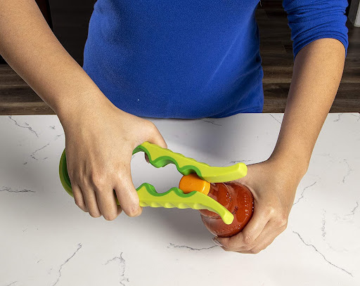
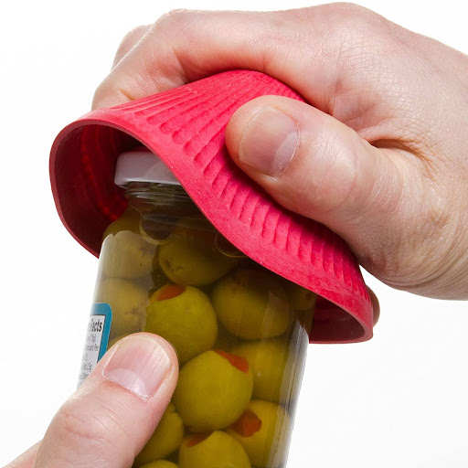
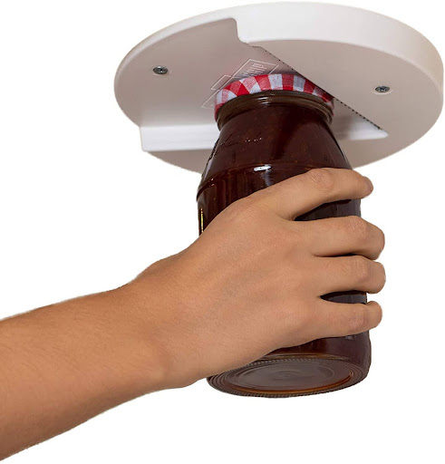
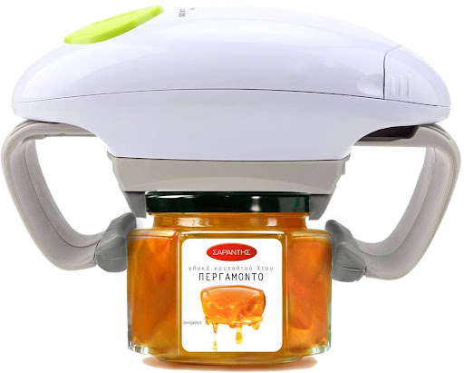
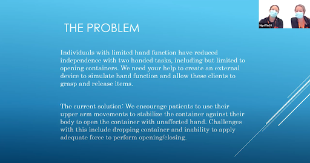
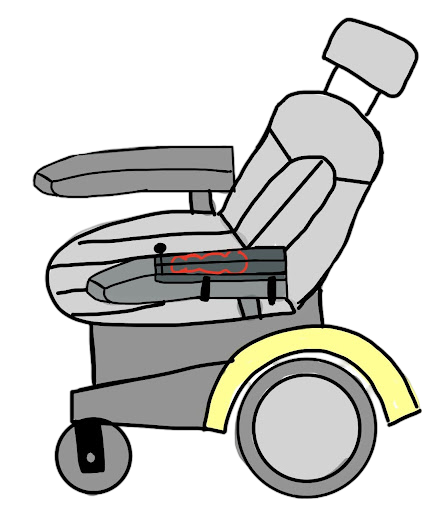
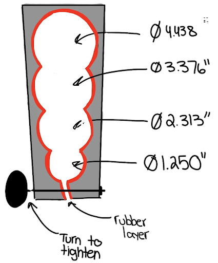

Problem
In order to open containers it is typically necessary to be able to grip the
container and rotate the lid simultaneously.
This task can pose additional difficulty for many experiencing limited grip strength or
mobility in
their hands.
Solution
A simple tool that acts as a wheelchair attachment capable of
gripping onto the base of containers
of
various sizes.
Background Research
About our Client
Our end user was an 18-year-old male who suffered a gunshot wound and had a stroke. This affected his spinal
cord and, by extension, mobility in his left hand and below the waist.
He could only manage minor movements in his left uppr arm and elbow.
Secondary Research
My teammates and I conducted interviews and web research to better
understand the problem and the needs of our users. Our target was to find out what solutions already
exist,
and the limitations that prevent them from satisfying our client's needs.
Existing Solutions
During our initial research, we discovered that the existing can openers either require the use of both
hands
to open. Some of the gripping solutions available are intended to add leverage for people who have
mobility
in both hands, therefore, our user would not be able to use them.

Easy Grip Jar Opener

Grip Mat

Under Cabinet Lid Opener

Electric Jar Opener
Project Partner Interview
We interviewed occupational therapists Randi Applehans and Meghan Griffin via Zoom to gain deeper
insight into the specific needs and daily challenges faced by our end user. This conversation helped us
understand his capabilities and everyday environment, hence informing our design decisions.

Image with the Randi Applehans and Meghan Griffin presenting the problem statement
Key design considerations identified during our interview include:
Adaptability to different container sizes
Operation requiring less than 10 pounds of grip strength
Single-handed usability
Compact design for easy transportation in a backpack
Safety and comfort for regular daily use
User Observation & Experimentation
To better inform our design, we conducted user observation sessions focusing on both Chris (our end
user) and our team's experiences when opening jars.
Observing the End User
We reviewed four short videos provided by our project partners showing Chris attempting to open
various
containers. These observations revealed:
Difficulty firmly gripping and stabilizing containers
Limited success using methods such as the elbow crease and sticky materials (dycem)
Consistent struggles due to reduced grip strength and mobility limitations
Self-Observation
Our team conducted controlled self-observations to simulate Chris's physical limitations. We tested
opening various containers—medication bottles, a water bottle, deodorant, hand sanitizer, and
jars—using
both one-handed and two-handed methods.
Our findings showed that larger lids and containers were particularly challenging to open with one
hand due to difficulty maintaining a stable grip and generating enough twisting force.
The Design
Our design, Ajar, is a removable attachment to his wheelchair arm that stabilizes containers of
everyday use. Ajar has cup holders of multiple sizes designed to stabilize the base of any container
the user may need to open.

Ajar secured to the left wheelchair arm
Ajar has four jar holders with the dimensions of 4.4375, 3.376, 2.313, and
1.250 inches in diameter. These hole diameters match those of a peanut butter jar, a medicine bottle,
and two values in between

A top view of Ajar
Ajar's primary material is polyurethane. Rubber lining throughout the points of contact between the
device and containers creates added grip strength and provides additional safety
Performance Testing
To evaluate our final design, we conducted a survey-based performance test involving potential
stakeholders, including intended users and their support networks. The survey explored the
intuitiveness, design effectiveness, and feasibility of our device, Ajar.
Participants were first shown an unlabeled image of the device to assess initial intuitiveness,
followed by a labeled image to gather feedback on component clarity and overall design
understanding.
Key Findings
Most participants intuitively understood Ajar's purpose from the initial unlabeled image
Concerns were raised about the ease of twisting the knob used for clamping and securely
attaching the device to the wheelchair
Some participants suggested that ergonomic issues related to reaching across the wheelchair
might arise